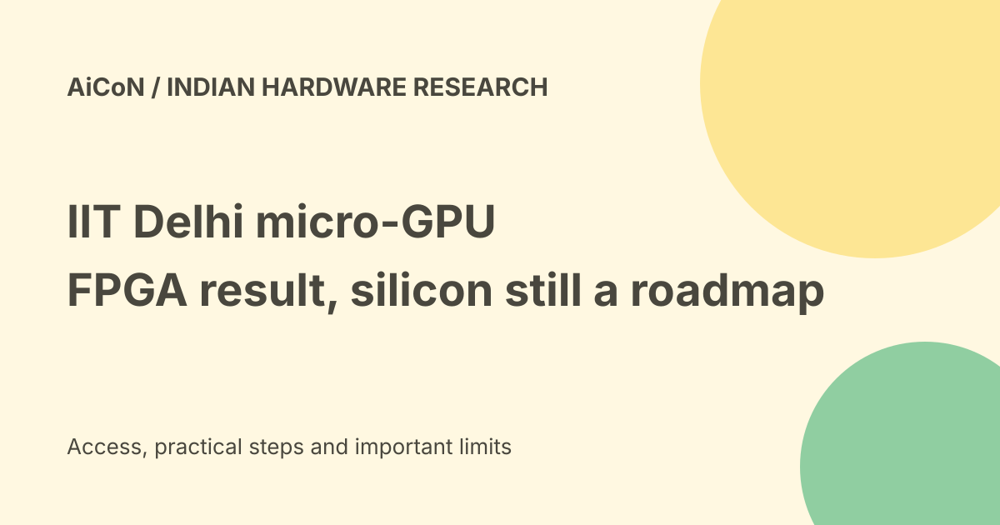

IIT Delhi micro-GPU: FPGA demonstration, research team and silicon roadmap
IIT Delhi researchers demonstrated a programmable micro-GPU architecture on a Spartan-7 FPGA. The institute published an official release on 24 September 2026. This is a working research design, not a mass-produced graphics chip for sale.

What was demonstrated?
The institute describes a custom floating-point graphics engine written in register-transfer-level hardware design and mapped to an FPGA.
An FPGA is a chip whose logic can be configured to implement a design. Demonstrating an architecture on it can show that the design works without first manufacturing a dedicated chip.
Why micro-GPU?
A graphics processing unit handles graphics tasks. The micro-GPU project focuses on compact, programmable graphics processing for embedded systems.
It is not presented as a replacement for every high-end gaming GPU or a large AI-training accelerator. The intended task and scale matter when comparing the work with imported processors.
The full research team
The official release names M.Tech students Nammi Akash and M. Ravi Teja, guided by Prof. Jayadeva and Prof. Kaushik Saha in IIT Delhi's Electrical Engineering Department.
The earlier short post named only part of that team. We use the fuller institute record rather than leaving contributors out.
The first claim is qualified
The researchers say that, to the best of their knowledge, this is the first working, demonstrable indigenously designed micro-GPU from a university in India.
Keep that qualification and category attached. It is different from an independently settled claim of the first Indian GPU of any type, or the first mass-manufactured Indian graphics chip.
Potential uses
The institute lists industrial control displays, low-cost human-machine interfaces, e-rickshaw dashboards, small-boat navigation terminals and educational e-book readers.
These are potential applications for the architecture. The release does not prove that each named end product has already shipped or passed its own safety and field tests.
FPGA versus ASIC
An ASIC is a chip made for a specific design. Moving from an FPGA demonstration to an ASIC involves further implementation, fabrication, validation and integration.
The release says the architecture may be mapped to silicon or programmable hardware. That possibility should not be rewritten as a completed fabrication result.
The next architecture is a roadmap
The team says it is exploring an eight-to-sixteen-core vector-style graphics architecture with an improved compiler and software tools.
A compiler translates a program into instructions for the target hardware. Hardware and its software tools both matter for a usable graphics platform. The larger architecture is a planned direction, not the exact demonstrated device.
Sixty-five-nanometre plans
The release describes eventual migration toward a proof of concept at a sixty-five-nanometre ASIC process node. The team sees mature semiconductor processes as potentially useful for affordable embedded systems.
A process-node target is not proof that wafers have been fabricated, yields measured or commercial supply secured. No finished silicon sample was independently inspected for this guide.
Funding and commercialization
The researchers say they plan to seek support for ASIC development, system integration and eventual commercialization.
Those future steps explain why a working research design can still be far from a product people can order. The release does not state a public retail price, delivery date or warranty.
India and free-versus-paid verdict
This is Indian academic hardware research, not a free consumer AI app. No public download of the design, open-source licence or retail offer was established in the checked release.
Do not assume a public announcement grants permission to reuse the intellectual property. A student can read the release and follow the research without buying access from an unrelated seller.
How to evaluate later claims
- Check whether the result is simulation, FPGA or manufactured silicon.
- Identify the exact architecture and configuration.
- Keep the research team's qualification on priority claims.
- Look for measured performance and power under stated conditions.
- Check licensing, fabrication and end-product evidence separately.
- Distinguish planned core counts from a demonstrated implementation.
No hardware purchase, design download or researcher inquiry was made for this guide.
What changed since the original post?
An official IIT Delhi release is available, so the earlier no-institute-release caveat no longer applies. We include the full named team and keep the important distinction between FPGA demonstration and future ASIC development.
Frequently asked questions
Is this a manufactured graphics chip?
The checked work is described as an FPGA implementation.
Can I buy it?
No public retail offer was established.
Is the design open source?
No public licence or source release was verified.
Sources: Official IIT Delhi release and full research team · Business Standard/PTI earlier reporting. Checked 7 October 2026.